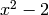
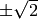
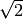
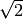

Navigation
- index
- next |
- previous |
- Sage Tutorial v4.3 »
- 导览 »

当定义矩阵、向量或者多项式时，有时候需要， 有时候是必须要指定其所在的“环”。 环 是一个数学结构， 在其上定义的加法和乘法有很好的性质。如果你从来没有听说过这些概念， 至少要了解以下这四个常用的环：
你需要了解它们之间的区别，因为对于同一个多项式， 处理方式完全取决于它定义在哪个环上。比如说，多项式  有两个根, . 这些根不是有理数， 所以如果你是讨论有理系数多项式，那么该多项式不能进行因式分解， 如果是实系数，就可以。所以你可能要指定环以保证得到的结果是你所期望的。 下面两个命令定义有理系数多项式和实系数多项式集合。 集合的名字分别是“ratpoly”和“realpoly”， 这两个名字并不重要， 但是要注意变量的名字“.<t>”和“.<z>”的使用。
sage: ratpoly.<t> = PolynomialRing(QQ)
sage: realpoly.<z> = PolynomialRing(RR)
现在我们展示 的因式分解。
sage: factor(t^2-2)
t^2 - 2
sage: factor(z^2-2)
(z - 1.41421356237310) * (z + 1.41421356237310)
对于矩阵存在同样的问题：矩阵的行消去形式取决于其所定义的环， 还有它的特征值和特征向量的计算。更多关于多项式构造的内容请参见: 多项式, 更多关于矩阵的内容请参见 线性代数.
符号 I 代表  的平方根; i 等同于 I.
当然这不是一个有理数
的平方根; i 等同于 I.
当然这不是一个有理数
sage: i # square root of -1
I
sage: i in QQ
False
注意：如果 i 已经被赋了其他的值，比如循环变量， 那么上面的代码不会给出预期的结果。出现这种情况，请输入
sage: reset('i')
来得到 i 的原始复数值。
定义复数的时候还有一个细节：如上所述 i 代表 的平方根，
但是它是 的 形式上的 或 符号的 平方根。
调用 CC(i) 或 CC.0 返回 的 复的 平方根。
sage: i = CC(i) # floating point complex number
sage: i == CC.0
True
sage: a, b = 4/3, 2/3
sage: z = a + b*i
sage: z
1.33333333333333 + 0.666666666666667*I
sage: z.imag() # imaginary part
0.666666666666667
sage: z.real() == a # automatic coercion before comparison
True
sage: a + b
2
sage: 2*b == a
True
sage: parent(2/3)
Rational Field
sage: parent(4/2)
Rational Field
sage: 2/3 + 0.1 # automatic coercion before addition
0.766666666666667
sage: 0.1 + 2/3 # coercion rules are symmetric in SAGE
0.766666666666667
下面是关于Sage中基本环的几个例子。上面已经提到有理数环可以用 QQ, 也可以用 RationalField() (域 是环的一种，乘法是可交换的，且所有非零元素均有乘法逆元。 所有有理数可以构成一个域，但是整数不行）
sage: RationalField()
Rational Field
sage: QQ
Rational Field
sage: 1/2 in QQ
True
十进制数 1.2 属于 QQ:
正好是有理数的十进制数可以被强制转换为有理数。
 和  都不是有理数:
和  都不是有理数:
sage: 1.2 in QQ
True
sage: pi in QQ
False
sage: pi in RR
True
sage: sqrt(2) in QQ
False
sage: sqrt(2) in CC
True
为用于高等数学，Sage还知道其他的环，比如有限域,  -adic整数，
代数数环，多项式环和矩阵环。下面是其中一些环的构造:
-adic整数，
代数数环，多项式环和矩阵环。下面是其中一些环的构造:
sage: GF(3)
Finite Field of size 3
sage: GF(27, 'a') # need to name the generator if not a prime field
Finite Field in a of size 3^3
sage: Zp(5)
5-adic Ring with capped relative precision 20
sage: sqrt(3) in QQbar # algebraic closure of QQ
True